01
플레이 중
새로운 단어와의 만남
상황에 어울리는 단어가 박자마다 등장합니다.
고르면서 낯선 감정 표현에 주목합니다.
근거 · 눈에 띄는 단어일수록 더 잘 습득되고 기억됐습니다
Lee, 2023 ↗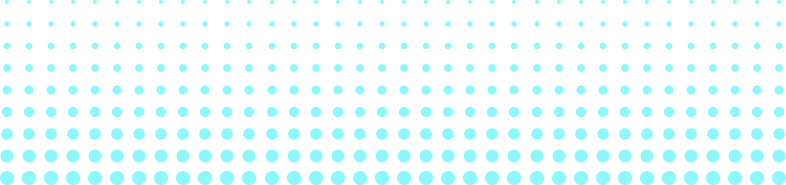
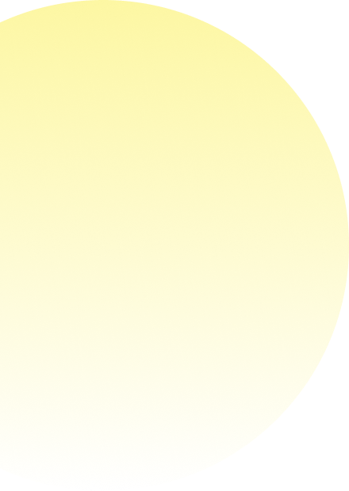
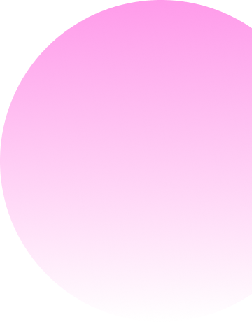
리듬게임으로 감정의 말을 찾는 전시
분명히 느꼈지만 이름 붙이기 어려웠던 마음.
리듬게임을 통해 감정의 말을 찾고, 마음에 남은 단어를 감정 나무에 걸어보세요.
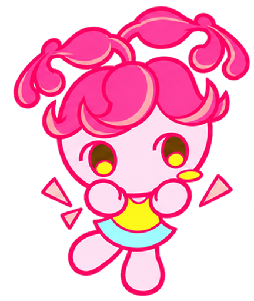
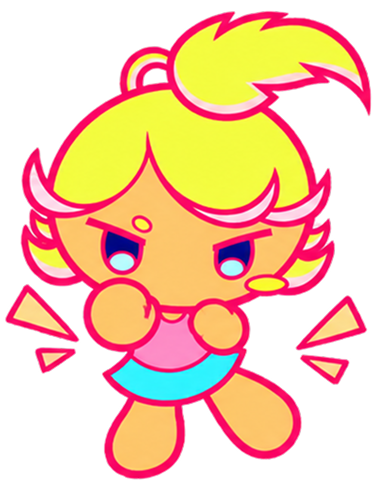
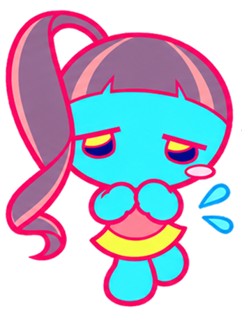
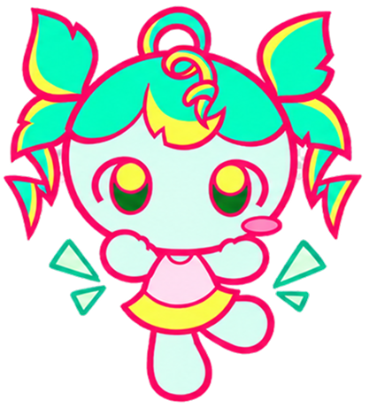
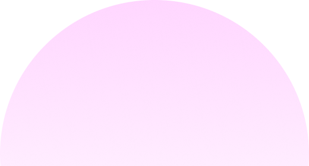
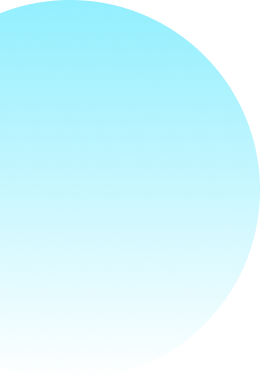
아래로 내려 말모이의 이야기를 만나보세요
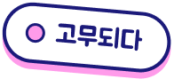
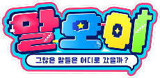
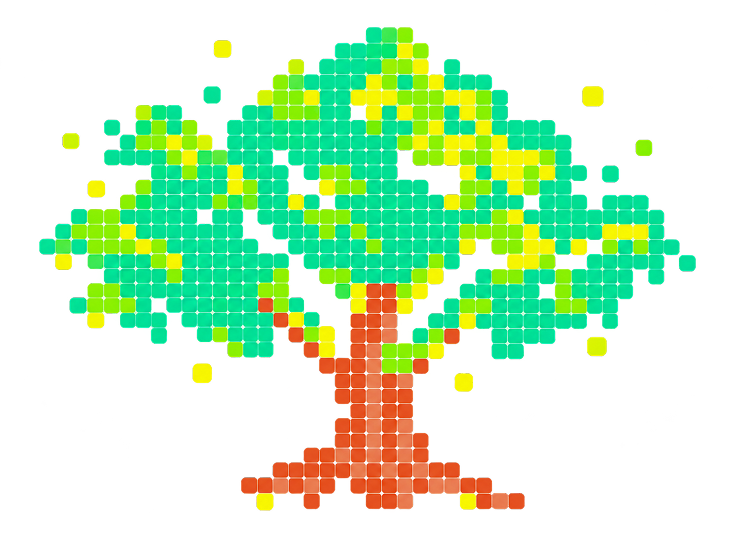
기쁘다 화난다 슬프다 즐겁다자주 쓰는 단어로는 표현하기 어려운 감정이 있습니다.
알맞은 단어가 떠오르지 않거나, 아는 단어도 설명하기 어렵습니다.
말모이는 익숙한 표현 너머의 감정 단어를 다시 만나는 작품입니다.
막연했던 마음에 조금 더 가까운 말을 찾아보세요.
말모이 이야기

상황에 어울리는 단어가 박자마다 등장합니다.
고르면서 낯선 감정 표현에 주목합니다.
근거 · 눈에 띄는 단어일수록 더 잘 습득되고 기억됐습니다
Lee, 2023 ↗다음 박을 기다렸다가 손동작으로 답하면 소리와
화면이 반응합니다. 지켜보는 대신 플레이합니다.
근거 · 게임 요소가 참여를 높였습니다
Sailer & Homner, 2020 ↗궁금해진 단어의 뜻을 결과 화면에서 확인합니다.
궁금증이 생긴 직후 뜻을 만나도록 설계했습니다.
근거 · 호기심이 높을 때 접한 정보는 이후 더 잘 기억됐습니다
Gruber et al., 2014 ↗평소 쓰지 않던 감정 단어를 놀이 속에서 자연스럽게 만나게 하고 싶었습니다.
박자에 맞춰 말을 고르고 손동작에 즉각 반응하는 리듬게임은 단어에 주목하고, 직접 참여하며, 궁금해진 뜻을 찾는 데 적합했습니다.
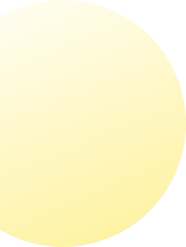
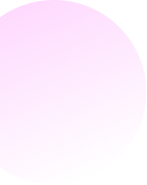
말모이의 숲에선 말이 씨앗이 되어 나무에 모이고, 잊힐수록 나무는 생기를 잃습니다.
모이와 희·노·애·락 요정들과 함께 새로운 감정의 말을 찾아보세요.
세계관 안내
게임에서 만난 요정들은 저마다 다른 감정의 풍경을 가지고 있습니다.
체험한 요정도, 아직 만나지 못한 요정도 천천히 살펴보세요.
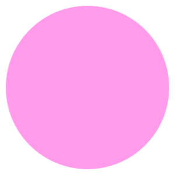
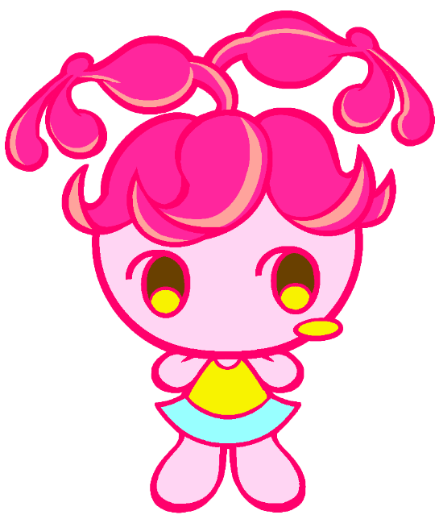
기쁨의 요정
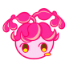
피오 · 희
기쁨의 요정
설렘 기대 벅참 뿌듯함
작은 기쁨에도 호기심이 많은 피오는
발그레한 볼을 보면 어떤 기쁨인지
묻고, 그 마음을 담은 말을 모읍니다.
좋아! 두근거려! 벅차올라!
괜히 마음이 간질간질해!
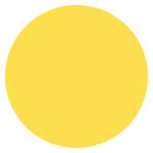
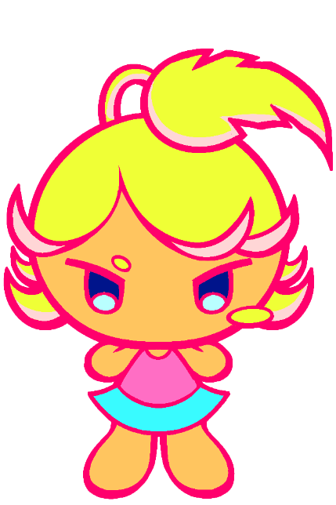
분노의 요정
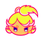
라온 · 노
분노의 요정
화남 분함 답답함 서운함
성미 급한 라온은 “짜증 나!”라는
말로 끝내지 않고, 그 안에 숨은
서운함과 답답함을 찾아냅니다.
짜증 난다고 끝내지 마!
그 안을 먼저 보자고.
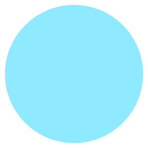
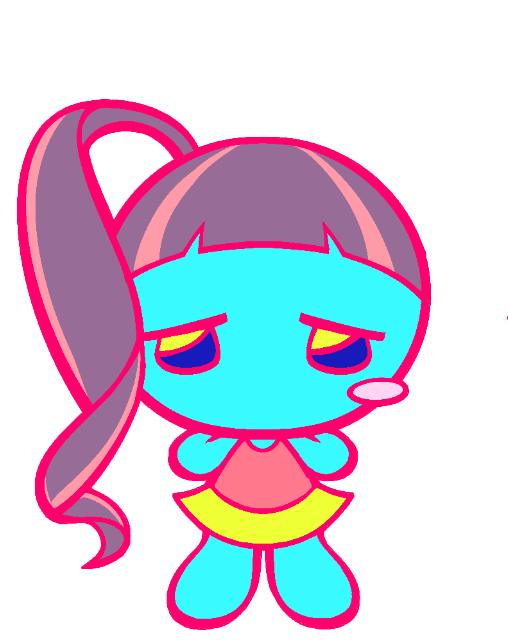
슬픔의 요정
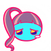
아리 · 애
슬픔의 요정
슬픔 외로움 그리움
섬세한 아리는 슬픔 속에 숨은
그리움과 허전함을 알아채고,
그 마음에 맞는 말을 찾아줍니다.
슬픈 게 아니야,
조금 허전한 거야.
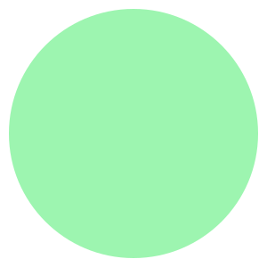
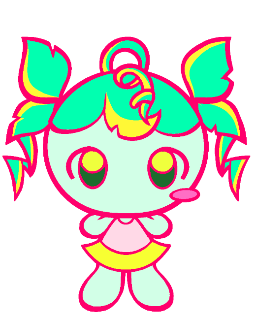
즐거움의 요정
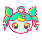
루루 · 락
즐거움의 요정
재미 해방감 만족
탐험을 좋아하는 루루는
신나는 순간부터 홀가분한 순간까지,
저마다 다른 즐거움의 말을 모읍니다.
감정은 혼자 자라지 않아!
만나면서 새 마음이 돼!
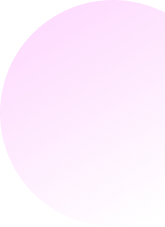
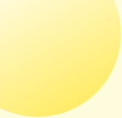
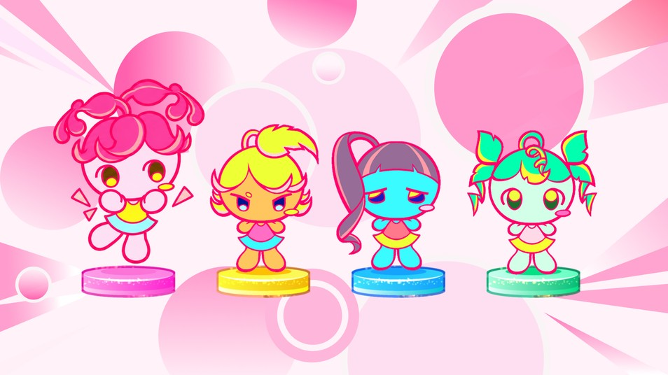
화면에서 체험할 요정을 고릅니다.
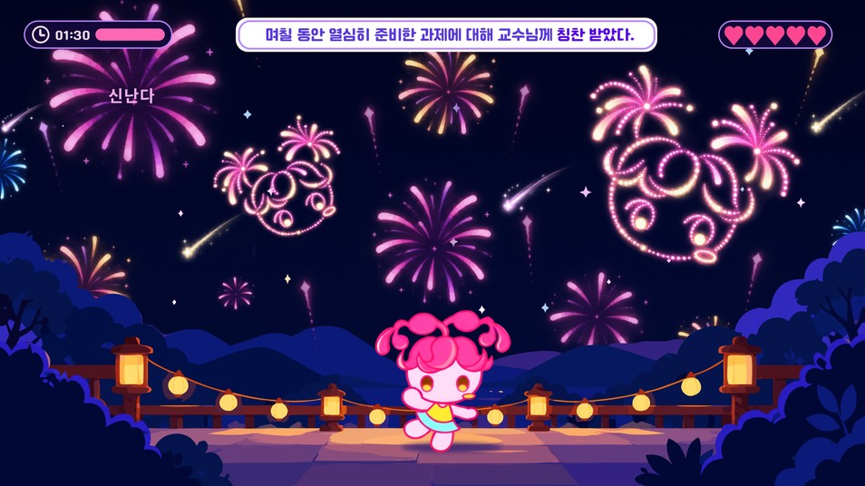
상황에 맞는 단어에 손동작으로 응답합니다.
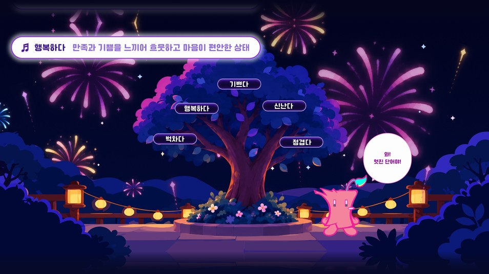
게임에서 만난 단어의 뜻을 살펴봅니다.
요정마다 서로 다른 동작으로 참여해요.
음악과 신호음을 듣고 정해진 박자에 응답해 보세요.

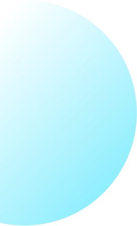
전시장에서는 이 중 한 게임을 골라 체험해요.
Hover카드에 마우스를 올리면 요정별 인게임 영상이 재생돼요
주먹을 쥐어 폭죽을 터뜨려요.
손동작주먹 쥐기
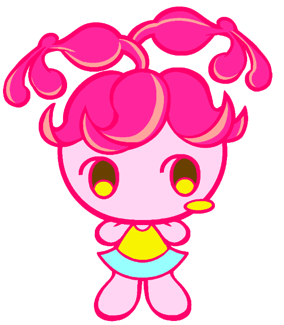
주먹을 쥐어 알맞은 송판을 격파해요.
손동작주먹 쥐기
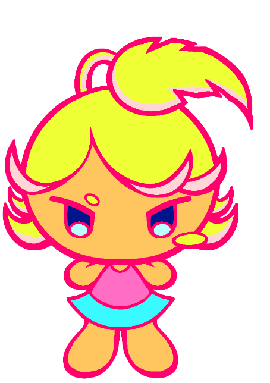
주먹을 쥐어 우산을 움직여요.
손동작주먹 쥐기
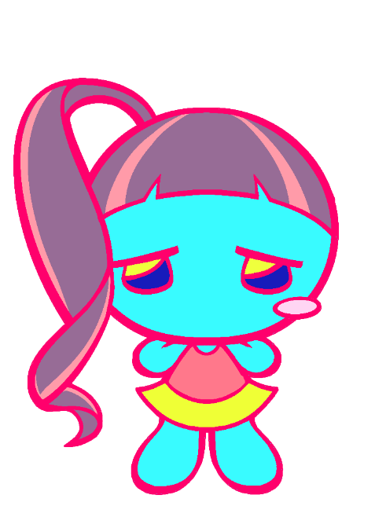
주먹을 쥐어 알맞은 슬로건을 골라요.
손동작주먹 쥐기
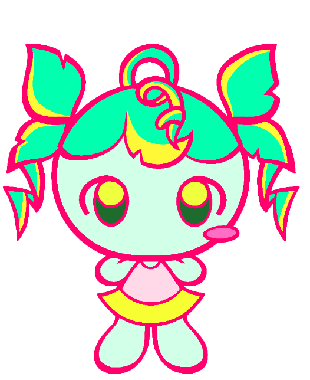
01질문에서 시작한 기획
설문과 연구 조사를 통해 감정에 맞는 말을
찾기 어려운 순간에 주목했습니다.
02네 감정의 모습 만들기
희·노·애·락의 특징을 캐릭터와 공간,
서로 다른 화면과 동작으로 표현했습니다.
03움직이며 다듬은 게임
손 인식 장비와 입력 방식을 비교해,
탐색과 선택을 구분했습니다.
04공간으로 이어진 체험
게임과 벽면 비주얼, 실물 나무를 연결해
발견한 말을 함께 남기도록 구성했습니다.
어떤 말을 만나게 할지 고민하고, 직접 움직여 보며 다듬었습니다.
기획과 디자인, 개발이 함께 이어온 과정을 소개합니다.
말모이 기획서 보러가기→
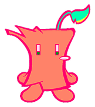
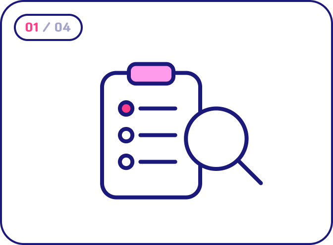
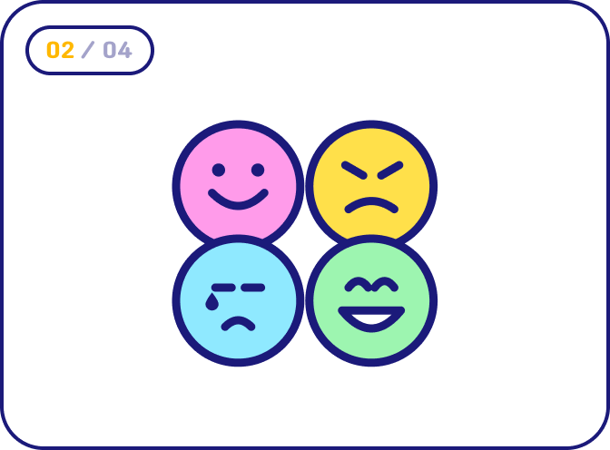
제작과정
팀소개
장윤희 · 민명혜
조강희 · 임현아 · 고서현 · 최승진
이유정 · 최송주